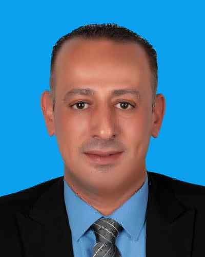

Business Development & Revenue Growth
Opportunity identification, business-case development, sales growth and disciplined commercial follow-through.
Commercial leader with 20+ years of experience across fine jewellery, sales leadership and international commercial operations. A track record of developing customer and supplier relationships, negotiating strategic partnerships and supporting market expansion across Kuwait, the UAE and international markets. Currently leading government-sector commercial opportunities at UGETCO.

My career spans fine jewellery, insurance and international commercial business, with additional experience in government and institutional procurement. Across these sectors, my focus has remained consistent: understanding customers and markets, identifying commercial opportunities, building trusted relationships and turning plans into practical results.
My jewellery background includes fine-jewellery wholesale and retail, supplier development, sales leadership, international exhibitions, strategic agency development and Kuwait–UAE market expansion. My wider commercial experience includes international supplier sourcing, tender and bid management, negotiation and cross-functional execution.
I am now building relationships with European jewellery designers and manufacturers interested in understanding Kuwait and the wider GCC. My approach is relationship-led and commercially grounded: understand the brand and product first, then assess relevant local partners and realistic market-entry routes.
Opportunity identification, business-case development, sales growth and disciplined commercial follow-through.
Market intelligence, cross-border development, international suppliers and practical market-entry execution.
Long-term relationship development with customers, manufacturers, suppliers, partners and senior stakeholders.
Consultative selling, customer needs analysis, sales performance, key accounts and relationship management.
Commercial terms, pricing, proposals, supplier coordination, stakeholder management and end-to-end execution.
Team coordination, executive communication and practical execution across commercial, finance, operations and external partners.
United Gulf Enterprises General Trading & Contracting Co. W.L.L. (UGETCO) | Kuwait
Lead commercial activities for government and institutional opportunities across energy, oil and gas, water, security and defence. Responsibilities include prequalification and registration, tender monitoring, international supplier sourcing, pricing and terms negotiations, bid coordination, proposal submissions and delivery follow-up. Led more than four government tenders through the full tender process.
Allianz Egypt | Egypt
Built strong product knowledge and a consultative sales approach after entering a new sector; regularly delivered approximately 60K+ against a standard target of about 30K and reached approximately 120K during the six-month nationwide campaign, ranking #1 nationwide.
Al Zummorda Jewelry | Kuwait
Managed a 44-person organization across sales, HR and administration, worked directly with executive management, and led the Dubai office expansion project, including market research, business case development, office acquisition and licensing. The initiative reduced annual customs-related costs by approximately KWD 100,000.
Al Zummorda Jewelry | Kuwait
Led fine-jewellery sales, customer development and supplier relationships; expanded international supplier exposure, participated in regional and international exhibitions, modernized marketing activity and developed the exclusive Kuwait agency relationship with a major Saudi jewellery group.
Technology-oriented academic foundation supporting digital literacy, research and business systems understanding.
Supporting knowledge in people management and organizational practice.
Based in Kuwait, open to international relocation and available for international travel. Holds valid Kuwait, UAE and Egyptian driving licences.